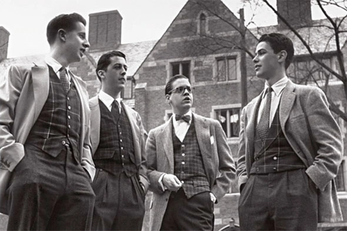
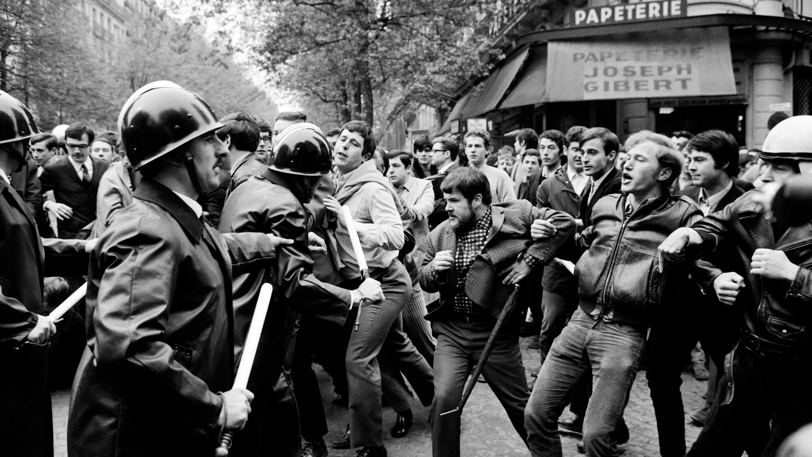

Les années 60 : la contre-culture
La contre-culture rejette les normes d’une société jugée trop rigide. On brise les codes, et l’on préfère le naturel, la spontanéité et le confort au beau, au solennel et au traditionnel. Jusque-là, rien de problématique. Mais le mouvement s’est amplifié : aujourd’hui, chercher l’esthétique paraît presque faux, artificiel, bourgeois, voire élitiste. Beaucoup préfèrent paraître « vrais », quitte à paraître complètement négligés, et une belle tenue n’est plus perçue comme un respect de soi et des autres.
Pourtant, bien s’habiller, c’est respecter les autres. L’exemple le plus simple : on soigne sa tenue pour un mariage, par égard pour les mariés et les invités. Et dès que l’on veut se faire beau, dans le réel comme dans l’inconscient collectif, on se rapproche du costume. Hors du mariage, en revanche, il passe pour un acte bourgeois, presque de domination.
Alors on se plie au nouveau dictat : jean, baskets, t-shirt basique, la panoplie parfaite du personnage non jouable de sa propre histoire. Le normcore en est l’exemple frappant : des tenues délibérément banales, devenues une mode. Être banal est devenu un style.
Il faut pourtant le souligner : ce mouvement a aussi apporté de bonnes choses. Il a brisé des carcans et rendu la mode accessible, non plus à quelques-uns, mais à la classe moyenne et à la classe ouvrière.

